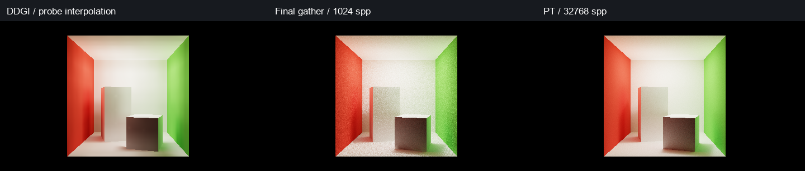
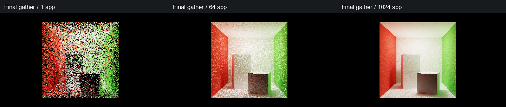
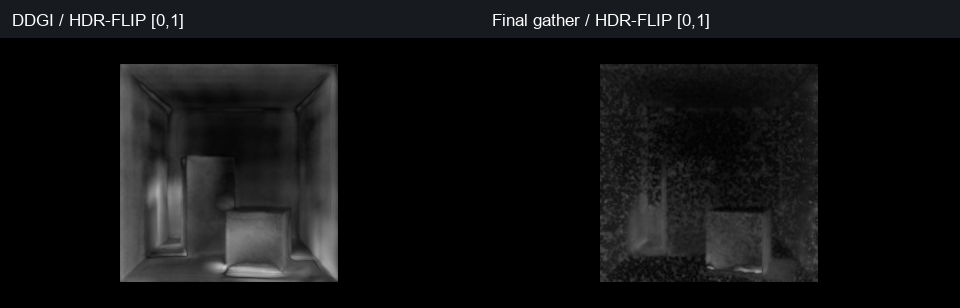
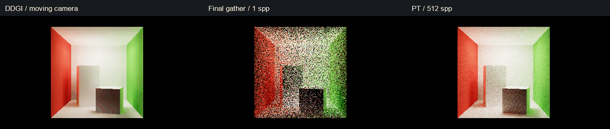

已实现从 GBuffer/VBuffer 可见表面分别采样漫反射与镜面反射、追踪二次命中点并查询 DDGI。静态 1024 spp 相对原始 DDGI 的间接光 MSE 降低 35.6%，但单帧噪声明显增加。尚未实现运动补偿降噪或 reservoir 重采样。

同一显示变换：+3 EV、ACES fitted、sRGB。图像包含表面反射率，无曝光拟合。
| 方法 | 累积 spp | 线性 RGB MSE | Mean HDR-FLIP |
|---|---|---|---|
| DDGI | 1 | 0.00015929 | 0.2257 |
| Final gather | 1 | 0.09759313 | 0.6399 |
| Final gather | 16 | 0.00472809 | 0.3187 |
| Final gather | 64 | 0.00128815 | 0.2203 |
| Final gather | 256 | 0.00034845 | 0.1489 |
| Final gather | 1024 | 0.00010255 | 0.1152 |


480×270；官方 Cornell 几何；白色顶灯点光源强度 1、位置 (0,1.9,0)，关闭太阳与环境。white/red/green 替换为 PBRTDiffuseMaterial。相机 (0.1,1,4) 朝向 (0.1,1,0)。探针 9×9×9、256 rays/probe、2048 帧预热，随后冻结用于静态和相机运动图像。偏移、范围见 scene.json。PT 为 32768 spp、最多 19 surface bounces，关闭 RR，开启 NEE/MIS；独立 32768 spp 序列测得参考间 MSE 0.00000716、HDR-FLIP 0.0240，参考并非无噪声真值。
PT 全色减去同机位确定性的点光源直接照明，得到间接光参考；减法后非负。候选为 DDGI.indirect 或累积全色减相同直接光。固定表面 mask，所有 EXR 均检查有限值。HDR-FLIP 沿用前一份报告曝光区间 4.002 至 6.461 EV、PPD 67；分辨率和预热预算不同，不直接把绝对数值与旧报告比较。

8 个机位，每帧向右移动 0.04 m，目标同步平移。PT 每机位 512 spp。探针场冻结，场景与光源不变。原始 DDGI 较稳定；final gather 显示未降噪 1 spp。已验证所有移动帧的 Accumulate 输出等于当前原始帧，没有使用旧机位的累积。这个短序列展示噪声和重置行为，不是具有重投影、遮挡剔除的时域降噪评测。
| Pass | 平均 ms | 说明 |
|---|---|---|
| DDGI | 0.2446 | 探针更新＋屏幕查询 |
| DDGI + gather | 0.2896 | 探针更新＋一次漫反射表面追踪；Lambert 无镜面 lobe |
| PT 1 spp | 0.0859 | 完整 PT pass；非 32768 spp 参考的总成本 |
NVIDIA GeForce RTX 5070、D3D12；各 127 个有效 GPU 时间戳，两个候选均开启相同诊断输出；计时重新开启探针更新，排除 GBuffer、累积、显示、读回和文件写入。简单小场景中 PT 1 spp 更快；不据此推断复杂场景性能，也不能将 1024 帧收敛质量当成一帧质量。
新增 finalGather/gatherDiffuse/gatherSpecular 三个开关，以及独立的 gatherDiffuse/gatherSpecular 输出。默认原始 DDGI 不开启 final gather。两类独立 lobe 的样本加和，不除以二；使用 Falcor 材质采样权重 f·cos/pdf。y 点返回自发光＋直接光（漫反射/镜面）＋Lambert DDGI 间接漫反射；没有 y 之后的镜面递归、透射、屏幕空间追踪、radiance-probe miss fallback、NRD 或 ReSTIR GI。
实验模式绕过外部 RTXDI：x 点只对解析光源做 NEE，环境和发光三角形通过 gather miss/hit 计入，避免无 MIS 时重复计数。因此小发光面/小亮天空的方差可能很大；关闭某个 gather lobe 也会去掉该 lobe 的环境/发光面响应。y 点环境漫反射由 DDGI 提供，环境镜面用现有直接光采样。当前 prototype 的 indirect 输出因此包含 BSDF 采样到的直接环境/发光面；本次无环境、无自发光场景没有这个分类歧义。
纯 Lambert 镜面输出严格为 0；StandardMaterial 测试镜面输出非零（最大 0.6331）。这是通道与材质路由验证，不是镜面画质定量评测。
补充环境光验证结果见 summary.json 的 additional_validation；只收录本地已有且通过的专项运行，包括单位白色天空的 Lambert 能量检查及原有 DDGI/RTXDI/WRC 环境回归。
项目根目录运行 Run-FinalGather.cmd，在 Mogwai 中加载场景；DDGI 面板切换 Surface final gather / Gather diffuse / Gather specular。静态累积可在 Accumulate 面板关闭或重置；更改模式和移动相机会自动重置，但探针持续收敛不会每帧重置累积。
build\windows-vs2022\bin\Release\Mogwai.exe --device-type d3d12 --headless --deferred --script tests/ddgi/final_gather_compare.py --width 480 --height 270 python tests/ddgi/score_final_gather.py
评分依赖：python -m pip install --target build/final-gather-python OpenEXR flip-evaluator，另需 numpy、Pillow。原始 EXR/日志/计时位于 build/final-gather-comparison。测试脚本会生成并使用独立点光源配置，不修改默认场景配置。